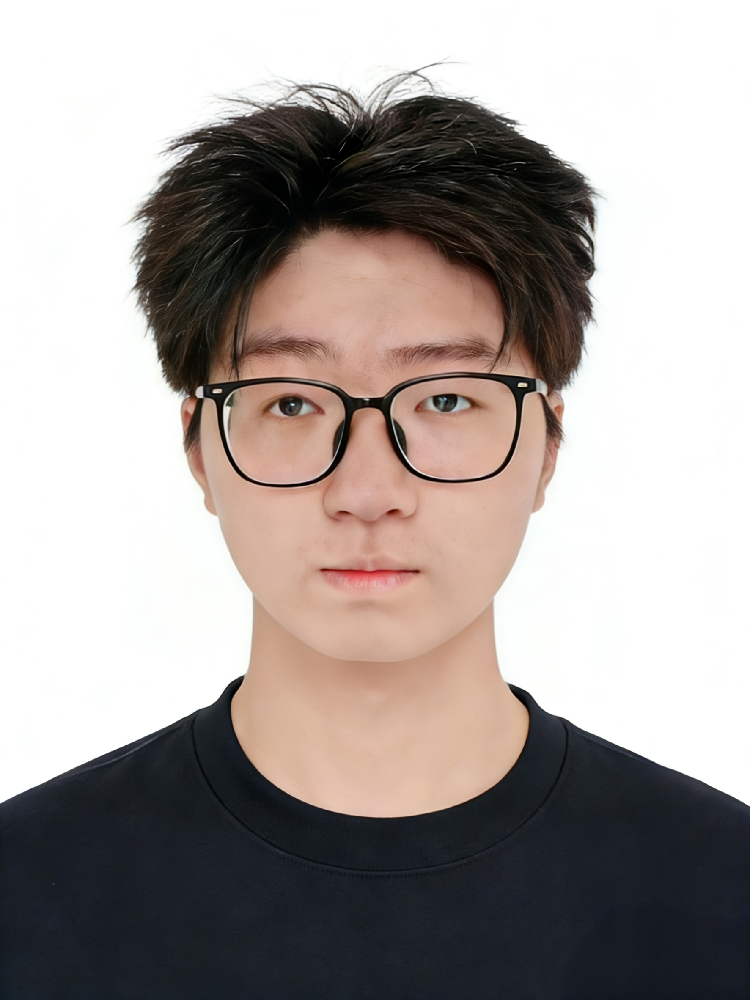

湖北省残疾人体育协会
省队风采
首页
机构概况
政策信息
残疾人体育
赛事活动
省队风采
资料下载
联系我们
当前位置：
首页
>
残疾人体育
>
省队风采
> 运动员详情

姓名
纪德康
项目
残疾人羽毛球 SU5级
身份
湖北省残疾人羽毛球队 注册在役运动员
教练
袁沼
籍贯
湖北大冶
学历
高中
性别
男
纪德康 运动员详情
运动生涯
纪德康，男，湖北省残疾人羽毛球队SU5级在役运动员，2026年正式进入省残疾人羽毛球队集训，师从省队主教练袁沼。右手肢体残疾，左手持拍，主攻双打项目。
赛事荣誉（省级及以上）
湖北省第十七届运动会群众体育类（残疾人组）“楚能杯”羽毛球比赛SU5男子双打第五名
湖北省第十七届运动会群众体育类（残疾人组）“楚能杯”羽毛球比赛SU5男子单打十强